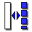

Die deutsche Übersetzung ist aktuell in Arbeit. The Part Design Workbench aims to provide tools for modelling complex solid parts and is based on a Feature editing methodology. It is intricately linked with the Sketcher Workbench.
What is a single contiguous solid? This is an item like a casting or something machined from a single block of metal. If the item involves nails, screws, glue or welding, it is not a single contiguous solid. As a practical example, PartDesign would not be used to model a wooden chair, but would be used to model the subcomponents (legs, slats, seat, etc). The subcomponents are combined using the Assembly, Part or Draft workbench.

Basic Workflow
The sketch is the building block for creating and editing solid parts. The workflow can be summarized by this: a sketch containing 2D geometry is created first, then a solid creation tool is used on the sketch. At the moment the available tools are:
-
 Pad which extrudes a sketch
Pad which extrudes a sketch -
 Pocket which creates a pocket on an existing solid
Pocket which creates a pocket on an existing solid -
 Revolution which creates a solid by revolving a sketch along an axis
Revolution which creates a solid by revolving a sketch along an axis -
 Groove which creates a groove in an existing solid
Groove which creates a groove in an existing solid
More tools are planned in future releases.
A very important concept in the PartDesign Workbench is the sketch support. Sketches can be created on standard planes (XY, XZ, YZ and planes parallel to them) or on a planar face of an existing solid. For this last case, the existing solid becomes the support of the sketch. Several tools will only work with sketches that have a support, for example, Pocket - without a support there would be nothing to remove material from!
After solid geometry has been created it can be modified with chamfers and fillets or transformed, e.g. mirrored or patterned.
The PartDesign Workbench is meant to create a single, connected solid. Multiple solids will be possible with the Assembly workbench.
As we create a model in the Part Design Workbench, each feature takes the shape of the last one and adds or removes something, creating linear dependencies from feature to feature as the model is created. Hence a "Cut" feature is not only the cut hole itself, but the whole part with the cut. As a new feature is added to the model, FreeCAD turns off visibility of the old features. The user usually should only have the newest item (feature) in the model tree visible, because otherwise the other phases of the model overlay each other, and holes are filled in by the earlier model features that didn't yet have those holes.
To toggle visibility of an object on or off, select it in the hierarchy tree and press the Spacebar. Usually everything but the last item in the hierarchy tree should be greyed out and therefore not visible in the 3D view.
Die Werkzeuge
The Part Design tools are all located in the Part Design menu that appears when you load the Part Design module.
They include the Sketcher Workbench tools, since the Part Design module is so dependent on them.
The Sketcher Tools
Skizziergeometrien
Zum Zeichnen folgender zweidimensionaler geometrischer Grundelemente stehen Werkzeuge zur Verfügung:
-
 Punkt: Zeichnen eines Punktes.
Punkt: Zeichnen eines Punktes. -
 Linie: Zeichnen einer geraden Strecke mit Angabe der beiden Endpunkte.
Linie: Zeichnen einer geraden Strecke mit Angabe der beiden Endpunkte. -
 Linienzug (Polygonzug): Zeichnen eines Linienzuges aus geraden Strecken mit Angabe der beiden Endpunkte und der Zwischenpunkte
Linienzug (Polygonzug): Zeichnen eines Linienzuges aus geraden Strecken mit Angabe der beiden Endpunkte und der Zwischenpunkte -
 Kreis: Zeichnen eines Kreises mit Angabe von Mittelpunkt und Radius.
Kreis: Zeichnen eines Kreises mit Angabe von Mittelpunkt und Radius.
-
 Kreis mit 3 Punkten : Zeichnen eines Kreises mit Angabe von 3 Punkten des Kreises.
Kreis mit 3 Punkten : Zeichnen eines Kreises mit Angabe von 3 Punkten des Kreises.
-
-
 Kreisbogen: Zeichnen eines Bogens mit Angabe von Mittelpunkt, Radius und Anfangswinkel und Endwinkel.
Kreisbogen: Zeichnen eines Bogens mit Angabe von Mittelpunkt, Radius und Anfangswinkel und Endwinkel.
-
 Kreisbogen mit 3 Punkten: Zeichnen eines Bogens mit Angabe der Endpunkte und eines dritten Punktes des Bogens.
Kreisbogen mit 3 Punkten: Zeichnen eines Bogens mit Angabe der Endpunkte und eines dritten Punktes des Bogens.
-
-
 Oval: Zeichnen eines Ovals mit Angabe des Mittelpunkts und des Radius eines der beiden Halbkreise und eines Endpunktes des anderen Halbkreises.
Oval: Zeichnen eines Ovals mit Angabe des Mittelpunkts und des Radius eines der beiden Halbkreise und eines Endpunktes des anderen Halbkreises. -
 Rechteck: Zeichnen eines Rechteck mit Angabe der beiden diagonal gegenüber liegenden Eckpunkte.
Rechteck: Zeichnen eines Rechteck mit Angabe der beiden diagonal gegenüber liegenden Eckpunkte.
-
 Trigon: Zeichnen eines regelmäßigen Dreiecks innerhalb seines Umkreises.
Trigon: Zeichnen eines regelmäßigen Dreiecks innerhalb seines Umkreises. -
 Tetragon: Zeichnen eines regelmäßigen Vierecks innerhalb seines Umkreises.
Tetragon: Zeichnen eines regelmäßigen Vierecks innerhalb seines Umkreises. -
 Pentagon: Zeichnen eines regelmäßigen Fünfecks innerhalb seines Umkreises.
Pentagon: Zeichnen eines regelmäßigen Fünfecks innerhalb seines Umkreises. -
 Hexagon: Zeichnen eines regelmäßigen Sechsecks innerhalb seines Umkreises.
Hexagon: Zeichnen eines regelmäßigen Sechsecks innerhalb seines Umkreises. -
 Heptagon: Zeichnen eines regelmäßigen Siebenecks innerhalb seines Umkreises.
Heptagon: Zeichnen eines regelmäßigen Siebenecks innerhalb seines Umkreises. - Octagon: Zeichnen eines regelmäßigen Achtfecks innerhalb seines Umkreises.
{kind=link}
-
 Keglschnitte:
Keglschnitte:
-
 Ellipse: Zeichnen einer Ellipse mit Angabe des Zentrums und der beiden Hauptachsen-Endpunkte.
Ellipse: Zeichnen einer Ellipse mit Angabe des Zentrums und der beiden Hauptachsen-Endpunkte. -
 Ellipse mit 3 Punkten: Zeichnen einer Ellipse mit Angabe der beiden Endpunkte der großen und eines Endpunkts der kleinen Hauptachse (Version 0.15).
Ellipse mit 3 Punkten: Zeichnen einer Ellipse mit Angabe der beiden Endpunkte der großen und eines Endpunkts der kleinen Hauptachse (Version 0.15). - Ellipsen-Bogen : Zeichnen eines Ellipsen-Bogens mit Angabe von Punkten (siehe Icon).
 Parabel-Bogen: Zeichnen eines Parabel-Bogens mit Angabe von Punkten (siehe Icon) (Version 0.17).
Parabel-Bogen: Zeichnen eines Parabel-Bogens mit Angabe von Punkten (siehe Icon) (Version 0.17). Hyperbel-Bogen: Zeichnen eines Hyperbel-Bogens mit Angabe von Punkten (siehe Icon) (Version 0.17).
Hyperbel-Bogen: Zeichnen eines Hyperbel-Bogens mit Angabe von Punkten (siehe Icon) (Version 0.17).
-
{kind=link}
Verändern zweidimensionaler geometrischer Grundelemente:
-
 Abrunden: Erstellt eine Abrundung zwischen zwei Linien (gewünschten Rundungsradius nachträglich vorgeben).
Abrunden: Erstellt eine Abrundung zwischen zwei Linien (gewünschten Rundungsradius nachträglich vorgeben). -
 Trimmen: Beschneidet eine Gerade, einen Kreis oder Bogen bis zur nächsten überlappenden Linie (Gerade, Kreis oder Bogen).
Trimmen: Beschneidet eine Gerade, einen Kreis oder Bogen bis zur nächsten überlappenden Linie (Gerade, Kreis oder Bogen).
Skizzierbeschränkungen
Numerische Constraints
Betimmen der Abmesungen der zweidimensionalen geometrischen Grundelemente
-
 Horizontal Distance: Bestimmt wird der horizontale Abstand zwischen zwei Punkten oder Linienenden. Wenn nur ein Element ausgewählt ist, wird der Abstand zum Koordinaten-Ursprung verwendet.
Horizontal Distance: Bestimmt wird der horizontale Abstand zwischen zwei Punkten oder Linienenden. Wenn nur ein Element ausgewählt ist, wird der Abstand zum Koordinaten-Ursprung verwendet. -
 Vertical Distance: Bestimmt wird der vertikale Abstand zwischen zwei Punkten oder Linienenden. Wenn nur ein Element ausgewählt ist, wird der Abstand zum Koordinaten-Ursprung verwendet.
Vertical Distance: Bestimmt wird der vertikale Abstand zwischen zwei Punkten oder Linienenden. Wenn nur ein Element ausgewählt ist, wird der Abstand zum Koordinaten-Ursprung verwendet. -
 Length: Bestimmt wird der direkte Abstand zwischen zwei Punkten oder die Länge einer Linie.
Length: Bestimmt wird der direkte Abstand zwischen zwei Punkten oder die Länge einer Linie. -
 Radius: Bestimmt wird der Radius eines Bogens oder Kreises.
Radius: Bestimmt wird der Radius eines Bogens oder Kreises. -
 InternalAngle: Bestimmt wird der Winkel zwischen zwei Linien.
InternalAngle: Bestimmt wird der Winkel zwischen zwei Linien.
Gometrische Constraints
Übernahme bereits bestimmter Abmessungen auf andere zweidimensionale geometrische Grundelemente
-
 Equal Length: Hergestellt wird die Gleichheit zwischen zwei Elementen. An Kreisen und Bögen wird der Radius gleich gesetzt. Wenn die Abmessung keines der gewählten Elemente noch nicht bestimmt ist, erhalten alle eine der bisherigen zufälligen Abmessung. Der Vorgang ist zu wiederholen, wobei von diesen nur ein Element und dazu ein Element mit bestimmter Abmessung zu wählen ist.
Equal Length: Hergestellt wird die Gleichheit zwischen zwei Elementen. An Kreisen und Bögen wird der Radius gleich gesetzt. Wenn die Abmessung keines der gewählten Elemente noch nicht bestimmt ist, erhalten alle eine der bisherigen zufälligen Abmessung. Der Vorgang ist zu wiederholen, wobei von diesen nur ein Element und dazu ein Element mit bestimmter Abmessung zu wählen ist.
Bestimmen der geometrischen Zuordnung der zweidimensionalen geometrischen Grundelemente im Koordinatensystem oder untereinander
-
 Horizontal: Als Richtung der Linien und Linienelemente wird die horizontale, d.h. die x-Richtung bestimmt.
Horizontal: Als Richtung der Linien und Linienelemente wird die horizontale, d.h. die x-Richtung bestimmt. -
 Vertical: Als Richtung der Linien und Linienelemente wird die vertikale, d.h. die y-Richtung bestimmt.
Vertical: Als Richtung der Linien und Linienelemente wird die vertikale, d.h. die y-Richtung bestimmt.
-
 Perpendicular: Bestimmt wird die Rechtwinkligkeit zwischen zwei ausgewählten Geraden.
Perpendicular: Bestimmt wird die Rechtwinkligkeit zwischen zwei ausgewählten Geraden. -
 Parallel: Bestimmt wird die Parallelität zwischen zwei ausgewählten Geraden.
Parallel: Bestimmt wird die Parallelität zwischen zwei ausgewählten Geraden. -
 Symmetric: Bestimmt wird die symmetrische Lage von zwei Punkten beidseits einer Geraden.
Symmetric: Bestimmt wird die symmetrische Lage von zwei Punkten beidseits einer Geraden.
Gegenseitiges Verbinden von zweidimensionalen geometrischen Grundelementen
-
 Coincident: Bestimmt wird, dass zwei Punkte (z.B. die Enden zweier Linien identisch sind (Punkt-zu-Punkt, sollten zwei Punkte von Linien zufällig aufeinander liegen, so werden sie zu einem gemacht; erst dann sind beide Linien wirklich verbunden).
Coincident: Bestimmt wird, dass zwei Punkte (z.B. die Enden zweier Linien identisch sind (Punkt-zu-Punkt, sollten zwei Punkte von Linien zufällig aufeinander liegen, so werden sie zu einem gemacht; erst dann sind beide Linien wirklich verbunden). -
 Point On Object: Bestimmt wird, dass ein Punkt Bestandteil einer Linie wird (Punkt zu Linie)).
Point On Object: Bestimmt wird, dass ein Punkt Bestandteil einer Linie wird (Punkt zu Linie)). -
 Tangent:Bestimmt wird, dass z.B. eine Gerade einen Kreis tangiert. Sie berühren sich in einem gemeinsamen identischen Punkt. Geraden werden zueinander kolinear gemacht.
Tangent:Bestimmt wird, dass z.B. eine Gerade einen Kreis tangiert. Sie berühren sich in einem gemeinsamen identischen Punkt. Geraden werden zueinander kolinear gemacht.
Sonstige Constraints
-
 Lock: Fixiert wird die momentane Lage eines Elementes relativ zum Koordinaten-Ursprung (Bestimmen des vertikalen und horizontalen Abstands davon).
Lock: Fixiert wird die momentane Lage eines Elementes relativ zum Koordinaten-Ursprung (Bestimmen des vertikalen und horizontalen Abstands davon).
Andere Skizzierwerkzeuge
-
 New Sketch: Erstellen einer Skizze auf einer ausgewählten Fläche.
New Sketch: Erstellen einer Skizze auf einer ausgewählten Fläche. -
 Leave Sketch: Beenden der Skizzier-Arbeit.
Leave Sketch: Beenden der Skizzier-Arbeit. -  Konstruktionsmodus: Wechseln vom Skizzier- zum Konstruktionsmodus (gezeichnete Linien werden zu Hilfslinien umgewandelt ) und zurück.
{kind=link}
The Part Design Tools
Construction tools
These are tools for creating solid objects or removing material from an existing solid object.
- Pad: Extrudes a solid object from a selected sketch.
- Pocket: Creates a pocket from a selected sketch. The sketch must be mapped to an existing solid object's face.
- Revolution: Creates a solid by revolving a sketch around an axis. The sketch must be a closed profile to get a solid object.
- Groove: Creates a groove by revolving a sketch around an axis. The sketch must be mapped to an existing solid object's face.
Modification tools
These are tools for modifying existing objects. They will allow you to choose which object to modify.
-
 Fillet: Fillets (rounds) edges of an object.
Fillet: Fillets (rounds) edges of an object. - Chamfer: Chamfers edges of an object.
-
 Draft: Applies angular draft to faces of an object.
Draft: Applies angular draft to faces of an object.
{kind=link}
Transformation tools
These are tools for transforming existing features. They will allow you to choose which features to transform.
-
 Mirrored: Mirrors features on a plane or face.
Mirrored: Mirrors features on a plane or face. -
 Linear Pattern: Creates a linear pattern of features.
Linear Pattern: Creates a linear pattern of features. -
 Polar Pattern: Creates a polar pattern of features.
Polar Pattern: Creates a polar pattern of features. -
 Scaled: Scales features to a different size.
Scaled: Scales features to a different size. - MultiTransform: Allows creating a pattern with any combination of the other transformations.
{kind=link}
Feature properties
Properties
There are two types of feature properties, accessible through tabs at the bottom of the Property editor:
- VIEWView : properties related to the visual display of the object.
- DATAData : properties related to the physical parameters of an object.
View

Base
- VIEWBounding Box : To view the occupation, and, overall, of the object dimensions in space. Value False, or True (Default, False).
- VIEWControl Point : Value False, or True (Default, False).
- VIEWDeviation : Sets the accuracy of the polygonal representation of the model in 3d view (tessellation). Lower values = better quality. The value is in percent of object's size (deviation in mm = (w+h+d)/3*valueInPercent/100, where w,h,d are sizes of bounding box).
- VIEWDisplay Mode :Display mode of the form, Flat lines, Shaded, Wireframe, Points
 . (Default, Flat lines).
. (Default, Flat lines).
- VIEWLighting : Lighting One side, Two side
 . (Default, Two side).
. (Default, Two side).
- VIEWLine Color : Gives the color of the line (edges) (Default, 25, 25, 25).
- VIEWLine Width : Gives the thickness of the line (edges) (Default, 2).
- VIEWPoint Color : Gives the color of the points (ends of the form) (Default, 25, 25, 25).
- VIEWPoint Size : Gives the size of the points (Default, 2).
- VIEWSelectable : Allows the selection of the form. Value False, ou True (Default, True).
- VIEWShape Color : Give the color shape (default, 204, 204, 204).
- VIEWTransparency : Sets the degree of transparency in the form of 0 to 100 (Default, 0).
- VIEWVisibility : Determines the visibility of the form (like the bar SPACE). Value False, or True (Default, True).
Data
{kind=link}
Base
DATAAngle : The argument Angle, indicates the angle that will be used with the option Axis (below). Here, an angle is defined, the angle on the axis, is set with the option Axis.
The object takes the specified angle around the specified axis.
An example, if you create an object with a required revolution should be rotate functionality of a certain amount, in order to enable it to take the same angle that another element existing.
DATAAxis : This option specifies the axis/axes to rotate the created object. The exact value of rotation comes from the angle (see above) option.
This option takes three arguments, these arguments, are transmitted in the form of numbers, x, y or z. Adding a value, more of an axis, will the rotation to each specified axis angle.
For example, with a Angle of 15 ° : specifying, 1.0 for x and 2.0 for y, will rotate 15 ° and 30 ° in the y-axis and the x-axis (final position),
DATABase : This option specifies the offset in either axes x, y, or z, and accept any number as the argument for each field.
DATALabel : The Label is the name given to the operation, this name can be changed at convenience.
DATAPlacement : [(0.00 0.00 1.00);0.00;(0.00 0.00 0.00)] Summary below data.
Every feature has a placement that can be controlled through the Data Properties table. It controls the placement of the part with respect to the coordinate system. NOTE: The placement options do not affect the physical dimensions of the feature, but merely its position in space!
If you select the title Placement  , a button with tree small points appears, clicking this button ..., you have access to the options window Tasks_Placement.
, a button with tree small points appears, clicking this button ..., you have access to the options window Tasks_Placement.
DATAAngle : The Angle argument specifies the angle to be used with the axis option (below). An angle is set here, and the axis that the angle acts upon is set with the axis option. The feature is rotated by the specified angle, about the specified axis. A usage example might be if you created a revolution feature as required, but then needed to rotate the whole feature by some amount, in order to allow it to line-up with another pre-existing feature.
DATAAxis : This option specifies the axis/axes about which the created feature is to be rotated. The exact value of rotation comes from the angle option (above). This option takes three arguments, which are passed as numbers to either the x, y, or z boxes in the tool. Adding a value to more than one of the axes will cause the part to be rotated by the angle in each axis. For example, with an angle of 15° set, specifying a value of 1.0 for x, and 2.0 for y will cause the finished part to be rotated 15° in the x-axis AND 30° in the y-axis.
DATAPosition : This option specifies the base point to which all dimensions refer. This option takes three arguments, which are passed as numbers to either the x, y, or z boxes in the tool. Adding a value to more than one of the boxes will cause the part to be translated by the number of units along the corresponding axis.
PS: The displayed properties can vary, depending on the tool used.
Tutorials
Only for a development version of FreeCAD that is not currently available as a binary or installer: